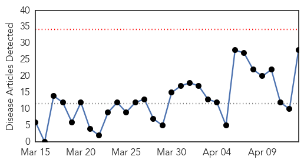
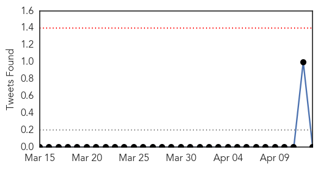
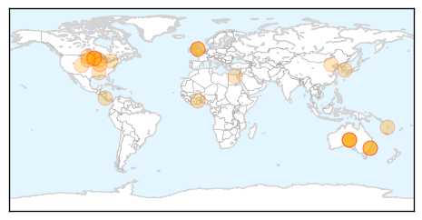

30 Day Trends
Web: 0 alerts, 0 warnings
Twitter: 0 alerts, 0 warnings
Top Articles:
- 1.000
- Unpredictability remains the one constant with seasonal influenza
- 0.995
- Can Bird Flu Spread to Humans? Can H5N2 Affect Your Pet?
- 0.994
- At-risk groups urged to book a flu shot now with flu on rise
- 0.986
- Australians urged to have flu vaccine shots - Xinhua
- 0.983
- Australians urged to have flu vaccine shots
- 0.950
- Flu vaccine delays put pregnant and elderly at risk
- 0.945
- Rapid diagnosis kit will take five minutes to test if you've really got the flu
- 0.945
- Tropical Cyclone Pam: Vanuatu - Health Cluster Bulletin #3, 11 April 2015 - Vanuatu
- 0.944
- Rapid diagnosis kit will take five minutes to test if you've really got the flu
- 0.930
- Flu vaccine to arrive next week after shortage
- 0.927
- Dog Flu Epidemic in Midwestern States have People Checking Their Pets Health Status
- 0.926
- Avian Flu Confirmed In Minnesota and now Both North And South Dakota
- 0.916
- Gold Coast University Hospital staff are failing to take up the offer of free flu jabs
- 0.911
- Highly Pathogenic H5N2 Avian Influenza found in Minnesota turkey flocks
- 0.902
- Researchers fear avian flu may be here to stay
- 0.855
- Vaccination campaign against influenza to start this month at public hospitals -The Tico Times
- 0.851
- Dog flu epidemic linked to South Korea and China
- 0.842
- Agency says 29 Ontario farms under bird flu quarantine, only one infected
- 0.831
- 29 Ontario farms under bird flu quarantine
- 0.831
- 29 Ontario farms now under bird flu quarantine, only one infected, CFIA says
- 0.799
- Caution urged for backyard flocks
- 0.795
- A New Approach Funded by Genome BC
- 0.786
- Infectious diseases kill 1,454 in China in March
- 0.778
- Avian flu infects Meeker County flock of 310,000
- 0.778
- Bird flu confirmed at 1 ND turkey farm, 4 more in Minnesota
- 0.751
- April 12, 2015 Archives
- 0.751
- April 12, 2015 Archives
- 0.702
- Avian flu strikes in area again: H5N2 now at 14 farms in state
Top Tweets:
-
No tweets found for Apr 13, 2015
Web/News Articles
Tweets
Article Locations
Article Confidences